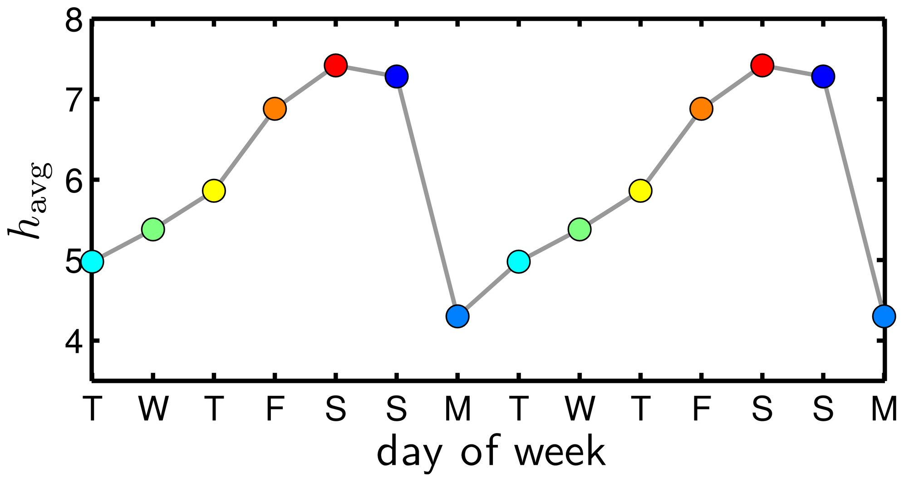
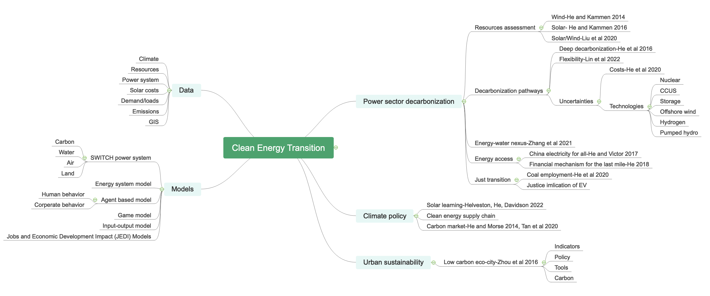
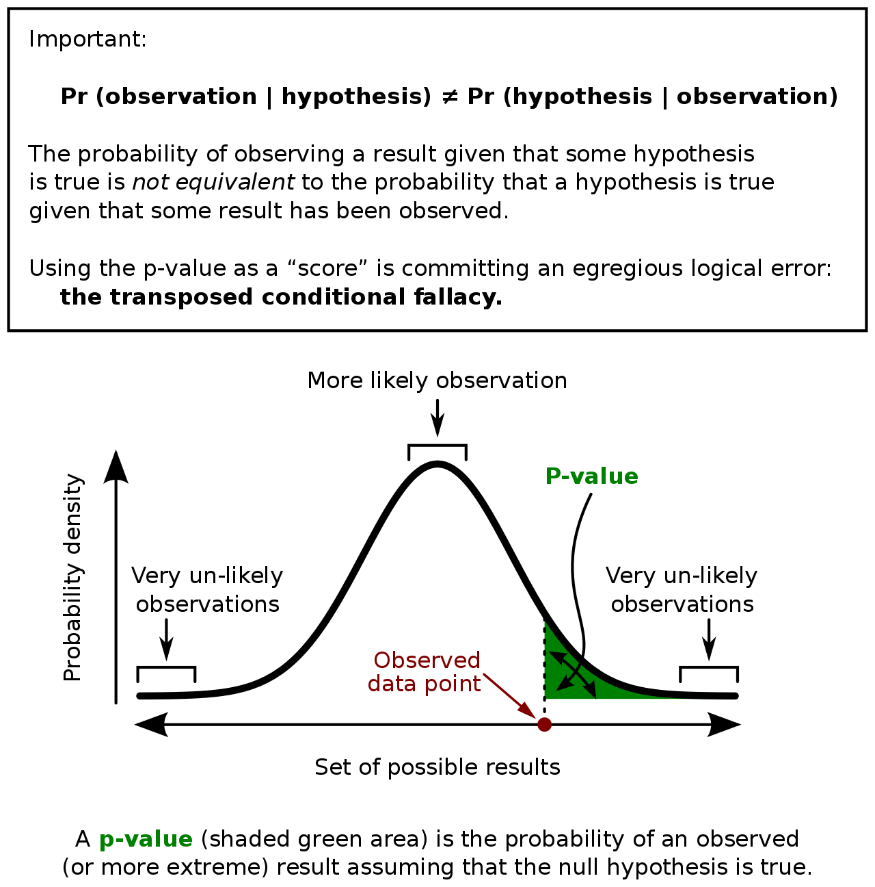
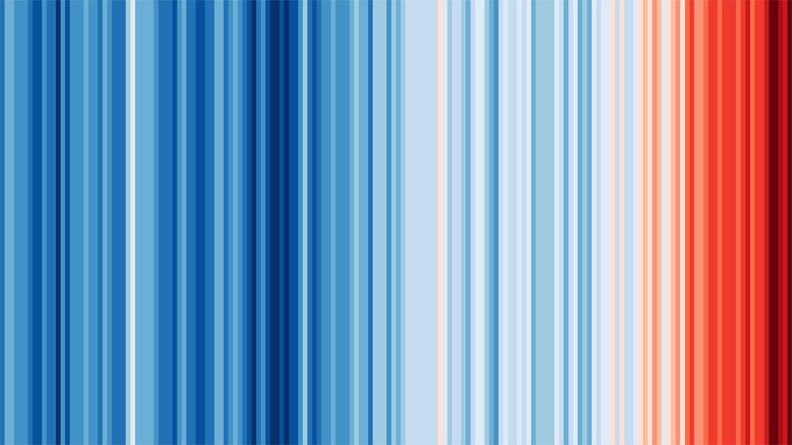
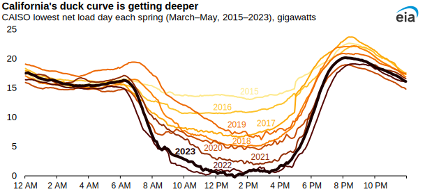

Lecture 7 Data Analysis: Quantitative, Qualitative, and Mixed Analysis
Gang He
April 27, 2024
Recap lecture 6
- Data sources
- Statistical data
- Survey
- Interview
- Evaluation project consultation
Today’s agenda
- Data analysis
- Qualitative methods
- Quantitative methods
- Visualization
- Story telling
- Case: NYC G&T Program
Source: Gang He; Learn more: NREL
Qualitative data
| Primary purpose | Methods |
|---|---|
| Enumerative | Classical Content Analysis; Word count; Cultural domain analysis; Ethnographic decision models |
| Descriptive | Matrix displays; Timelines; Concept maps/mind maps; Template/framework analysis |
| Hermeneutic | Thematic analysis; Constant comparative method; Thematic narrative analysis; Framework analysis; Discourse analysis; Qualitative content analysis |
| Explannatory | Qualitative comparative analysis; Process tracing |
Source: Newcomer, Hatry, and Wholey (2015)
Coding and categorizing
Source: Dodds et al. (2011)
Matrix displays
I have two kinds of problems: the urgent and the important. The urgent are not important, and the important are never urgent.
— Dwight D. Eisenhower

Image source
Delphi method/technique
Source: Image created by Bing with DALL-E 3
Word counting
- 2,406: Number of words in President Obama’s inaugural speech
- 4: Number of times the president said “crisis”
- 3: Number of times he said “economy”
- 2: Number of times he said “war”
- 67: Number of times he said “our”
- 2: Number of times he said “my”
- 1: Number of times he said “change”
- 11: Number of times he said “new”
Discuss the limitations of word counting
Source: U.S. News
Mindmap
Open source options: Markmap
Descriptive statistics
- Distribution
- Measures of central tendency
- Mean
- Median
- Mode
- Measures of variability
- Range
- Standard deviation
- Variance
- Interquartile range
Statistical tests

Source: Scribbr; Learn more: Data Analysis and Statistics with R, R for Data Science
R squared
“The proportion of the variation in the dependent variable that is predictable from the independent variable(s).”
\(R^2\) does not indicate whether:
- the independent variables are a cause of the changes in the dependent variable;
- omitted-variable bias exists;
- the correct regression was used;
- the most appropriate set of independent variables has been chosen;
- there is collinearity present in the data on the explanatory variables;
- the model might be improved by using transformed versions of the existing set of independent variables;
- there are enough data points to make a solid conclusion.
Source: Wikipedia
Summary of statistics
| United States | China | Germany | |
|---|---|---|---|
| Est. (Std. Err.) | Est. (Std. Err.) | Est. (Std. Err.) | |
| (Intercept) | 15 (1.04)*** | 18 (1.58)*** | 12 (0.96)*** |
| log(cum_capacity_kw) | -0.44 (0.045)*** | -0.57 (0.070)*** | -0.33 (0.042)*** |
| log(price_si) | 0.15 (0.058)* | 0.23 (0.079) | 0.21 (0.054) |
Asterisks indicate the level of significance: *5%; **1%; ***0.1%.
Source: Helveston, He, and Davidson (2022)
Statiscal significance
p value: “The lower the p-value is, the lower the probability of getting that result if the null hypothesis were true.”
Stories
- Data story
- Method story
- Pattens and trends
- Organization and instution vision, mission, and efforts
- Motivate changes
Climate Strips
Duck curve
Source: EIA
References
Benjamin, Daniel J., James O. Berger, Magnus Johannesson, Brian A. Nosek, E.-J. Wagenmakers, Richard Berk, Kenneth A. Bollen, et al. 2018. “Redefine Statistical Significance.” Nature Human Behaviour 2 (1): 6–10. https://doi.org/10.1038/s41562-017-0189-z.
Dodds, Peter Sheridan, Kameron Decker Harris, Isabel M. Kloumann, Catherine A. Bliss, and Christopher M. Danforth. 2011. “Temporal Patterns of Happiness and Information in a Global Social Network: Hedonometrics and Twitter.” PLOS ONE 6 (12): e26752. https://doi.org/10.1371/journal.pone.0026752.
Helveston, John Paul, Gang He, and Michael R. Davidson. 2022. “Quantifying the Cost Savings of Global Solar Photovoltaic Supply Chains.” Nature 612 (7938): 83–87. https://doi.org/10.1038/s41586-022-05316-6.
Leek, Jeff, Blakeley B. McShane, Andrew Gelman, David Colquhoun, Michèle B. Nuijten, and Steven N. Goodman. 2017. “Five Ways to Fix Statistics.” Nature 551 (7682): 557–59. https://doi.org/10.1038/d41586-017-07522-z.
Newcomer, Kathryn E., Harry P. Hatry, and Joseph S. Wholey. 2015. Handbook of Practical Program Evaluation. 4th edition. San Francisco: Jossey-Bass.